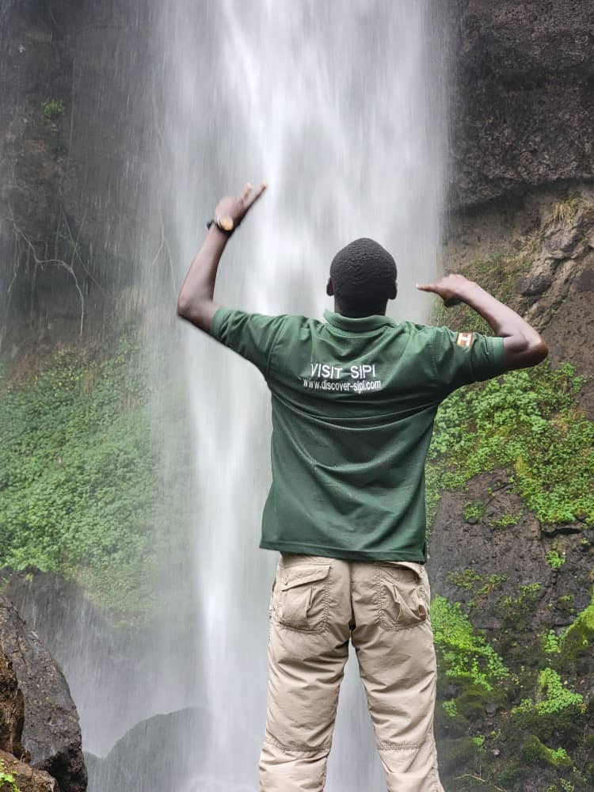

Discover the soul of Sipi Falls through our story, team, and commitment to nature and community. We’re here to guide you through the wonders of this magical place, from misty hikes and coffee tours to vibrant local culture. Discover what makes Sipi Falls unforgettable.
Nestled on the slopes of Mount Elgon, Sipi Falls has whispered tales of wonder for centuries.
Long ago, the Sabiny people, guardians of this land, spoke of a mythical figure, Kintu,
believed to be the first human to wander Uganda’s wilds, with his fire igniting life in the village of Chema.
Legends say the falls’ name, “Sipi,” honors a medicinal plant growing along the Sipi River, used to heal fevers
and unite communities. British explorers, captivated by its beauty, mistook the plant’s name for the falls
themselves, cementing its legacy. Our journey began with local enthusiasts who saw Sipi’s potential as a
haven for adventurers and nature lovers, turning ancient lore into a thriving destination. Today, we carry
forward this heritage, blending history with modern exploration.
To share Sipi Falls’ natural beauty and cultural richness with the world, offering authentic experiences while supporting the local Sabiny community through sustainable tourism.
To be the leading eco-friendly adventure hub in East Africa, preserving Mount Elgon’s wonders for future generations while empowering our community.
Chebokoch hides a natural bright spot where water flows underground, forming a serene swimming pool. Our guides lead you through lush plantations and roaring cascades, creating memories you’ll cherish forever.
Discover Chepkui’s volcanic caves with petrified wood, offering a peek into ancient geology. It's waterfall is kind of a double sided one provides the best clear view
Explore Kaptogolo’s vast chambers with mineral salt deposits, once a refuge for cattle herders. The roocks have ancient paintings which were known to be homes for acient people
What sets Sipi Falls apart is the Triple Falls, each with its own cave adventure.
Our tours empower the Sabiny community by creating jobs for guides and supporting local crafts like coffee and souvenirs. We promote sustainable tourism by minimizing environmental impact—using solar power at lodges, encouraging waste reduction, and planting coffee trees with visitors. Every trip helps preserve Mount Elgon’s biodiversity, ensuring Sipi Falls remains a thriving paradise.
Years of Experience
Tours Led
Happy Visitors

15 years of guiding, specializing in hiking and abseiling. Known for his humor and deep local knowledge.
Founder since 2018, expert in cultural tours and photography, passionate about community growth.
Renowned for sunset tours and coffee experiences, brings enthusiasm and storytelling to every trip.
Experience the magic of Sipi Falls through this video.
Plan your adventure today! Visit our Contact Us page to book your personalized tour.